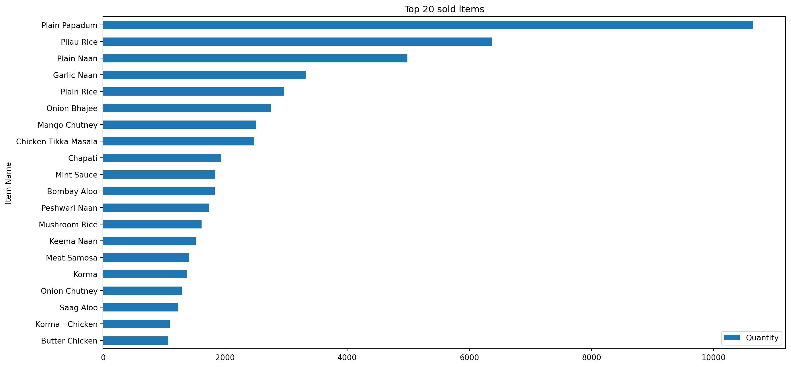
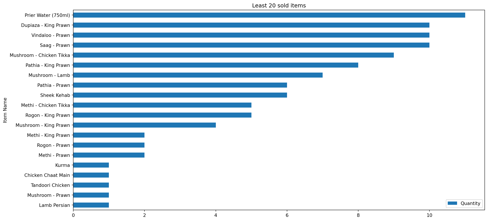
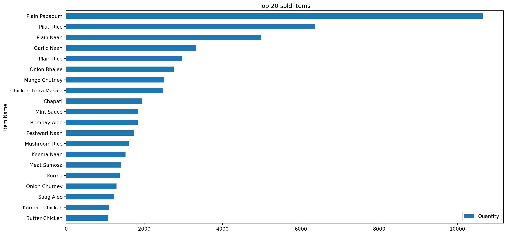
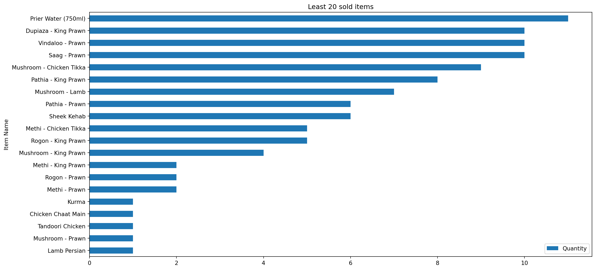
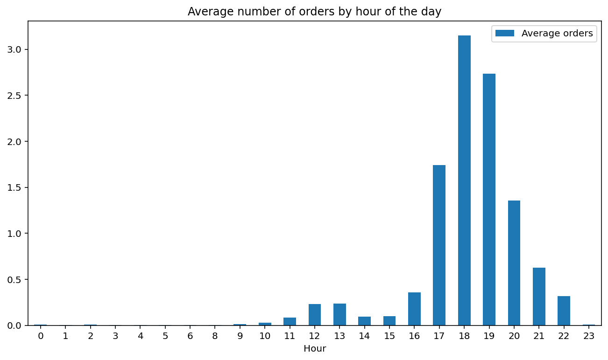
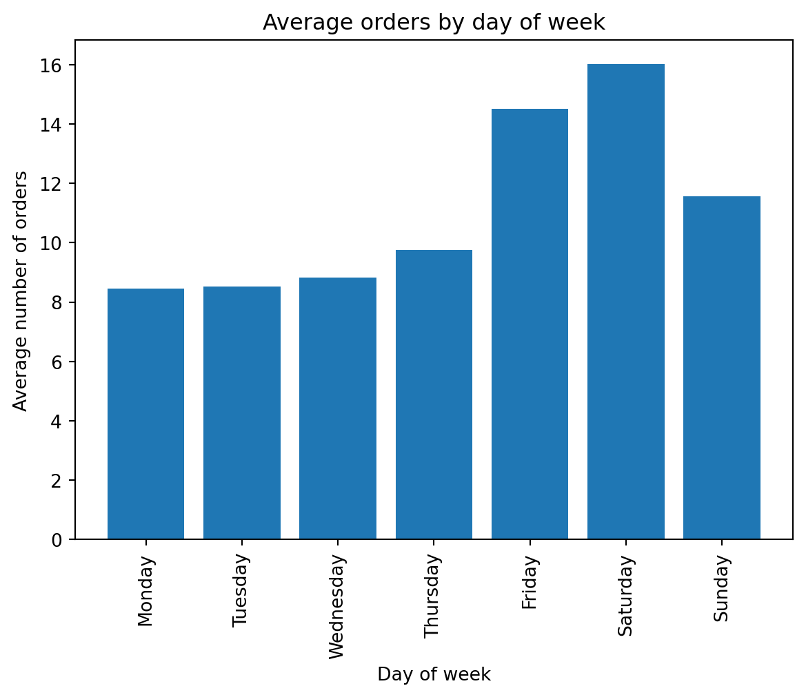
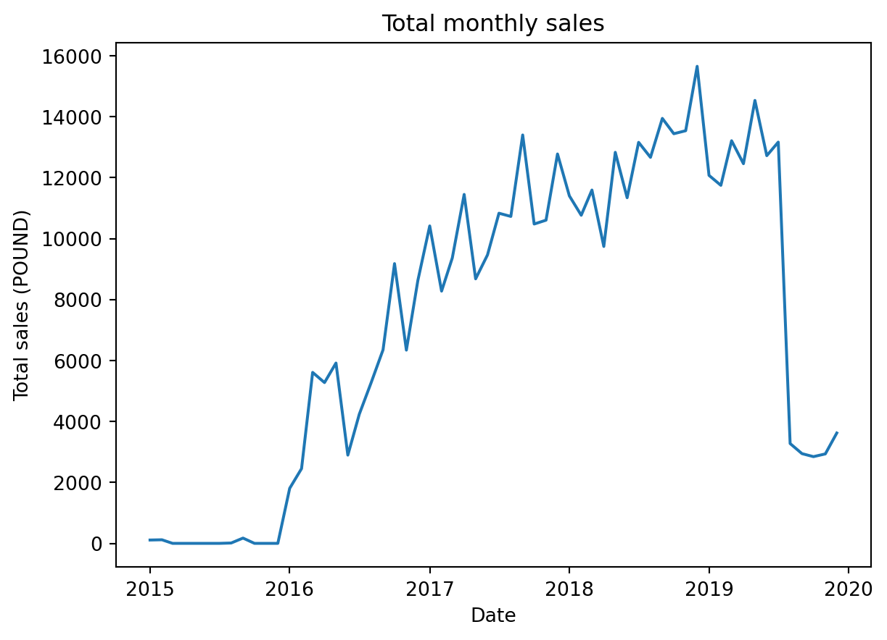
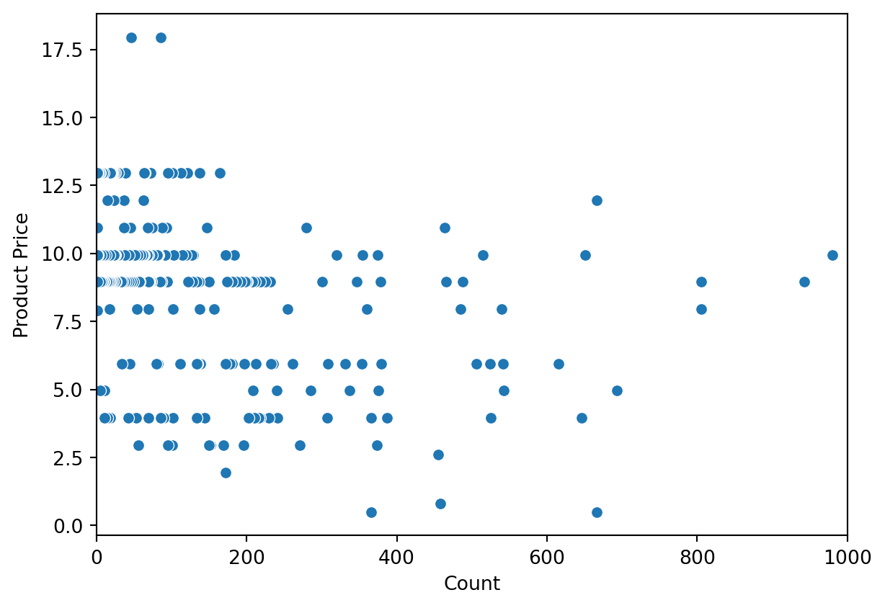

Text(0.5, 1.0, 'Least 20 sold items')

Restaurants play a crucial role in a nation’ s economy and culture. Most of us have visited at least once, a variety of purposes. Given the recent increase in food trucks and popup restaurants, it is essential for the business owners to carefully consider the timing and location of new restaurant openings, as this requires a significant investment of resources. The rapidly changing business environment in the restaurant industry, characterized by the introduction of diverse restaurants with unique features and themes, presents both opportunities and challenges for restaurant owners. The strong growth of the food and beverage sector in various parts of the world has resulted in increased competition among restaurant business owners, highlighting the need for them to be well-prepared in all aspects of their operations, including concept, product innovation, and operational systems. One of the reasons for the growth of the restaurant industry is that the current food and beverage industry, particularly this restaurant, promises enormous profits and views people’s need to eat and drink as a basic necessity that must be met in order to exist. This is a chance that can be used as a successful business opportunity. It makes sense that there are so many restaurants with a variety of concepts, operational methods, and creativity with diverse product developments that showcase what these establishments have to offer to draw clients or notions that can be displayed to customers.
Knowing the consumer’s preferences, their purchasing habits with regard to the products they frequently purchase, and their product purchase patterns, which can be seen through purchase transaction data, are all necessary for developing the right sales strategy and creating the right target promotion. Data mining techniques can be used to extract information from stored transaction data in order to create new data or data patterns. For instance, data to determine the sales trends in relation to the menu association rules. A priori algorithm, also known as market basket analysis, is a technique that may be used to examine customer purchasing behavior and generate association rules using the “if then” pattern.
With the intention of focusing the project to raise the profit of an Indian takeaway restaurant by giving marketing suggestions of association supported by data, we focused on recent data for Indian takeaway restaurant’s dataset placed in London, UK . In particular, we inquired into to two aspects of Indian restaurant which is given below:
Quantity:
What is the most ordered product?
What is the least ordered product?
What is the quantity of product ordered each day, week, year?
Profit:
What is the average profit of the day, week, year?
How to raise the profit by using role of association?
According to information we got from customer feedback, prior research in this area was primarily concerned with the impact of menu design, staff training and marketing efforts (Kang et al., 2012; Lu et al., 2013; Luo & Xu., 2021). There is still a need for further research on the most effective methods for collecting and utilizing customers’ collected information.
Recent research has focused on how to predict sales patterns utilizing data mining-based analysis, such as market basket analysis. Studies like those that (Aditiya Hermawan and Riki, 2019) took a step further by working to suggest various combinations of items based on the likelihood of their occurence in the data which can help in the restaurant profit by applying Association of items at the O! Fish resturant.
The data for this project was sourced from Kaggle and consists of 74,818 observations of an Indian takeaway restaurant located in London, UK, covering the period from 2015 to 2019. The dataset includes six variables, which were augmented by an additional four variables for the purposes of this study.
1.Order Number - receipt number.
2.Order Date - date and time of the order.
3.Item Name - name of the order in the menu.
4.Quantity - number of orders per item for the receipt.
5.Product Price - item price without counting the quantity.
6.Total products - total number of items per receipt.
7.Total Price - total payment for a customer
8.Time - time of order placing
9.Date - Date of order placing
10.Day - Name of the day in the week
Top 20 and Least 20 Sold Items
Text(0.5, 1.0, 'Least 20 sold items')

We can see from the above two figure ,In the whole data of 248 items of 2015-2019 years the most ordered product is Plain Papadum being ordered 10000 times. On the other hand during the same time the least ordered product is multiple items of Prown, Kurma and Lamp Persion being ordered only once.
Average Number of Orders by Hour of the Day
Text(0.5, 1.0, 'Average number of orders by hour of the day')
From the above bar graph, we visualized that Usually customers start ordering from 10 o’clock in the morning. The rush horse start from 4 o’clock and the peak is at 6 then orders decline until 12 o’clock in the evening.
Average Orders by Day of Week
([0, 1, 2, 3, 4, 5, 6],
[Text(0, 0, ''),
Text(0, 0, ''),
Text(0, 0, ''),
Text(0, 0, ''),
Text(0, 0, ''),
Text(0, 0, ''),
Text(0, 0, '')])
We see from the above graph for the days, Fridays and Saturdays are the most busiest days in the week, and we have to point out that UK weekends are saturday and sunday. Therefore we can say that the average number of orders in the weekends is higher than the weekdays.
Total Monthly Sales
First Sale: 2015-01-09 14:42:00
Last Sale: 2019-12-07 22:24:00| month | total | |
|---|---|---|
| 48 | 2019-01-01 | 12076.15 |
| 49 | 2019-02-01 | 11748.80 |
| 50 | 2019-03-01 | 13212.70 |
| 51 | 2019-04-01 | 12459.45 |
| 52 | 2019-05-01 | 14536.10 |
| 53 | 2019-06-01 | 12722.75 |
| 54 | 2019-07-01 | 13167.75 |
| 55 | 2019-08-01 | 3275.70 |
| 56 | 2019-09-01 | 2944.50 |
| 57 | 2019-10-01 | 2845.90 |
| 58 | 2019-11-01 | 2935.55 |
| 59 | 2019-12-01 | 3621.60 |

From the above graph, We can see that monthly sales had been growing up to a point in the middle of 2019 where they suffered a big drop. The month in which sales fell was August 2019 which is due to two heatwaves and flooding accounted in Uk in the month of August and November 2019.
(0.0, 1000.0)
Apriori algorithm is a powerful tool for discovering frequent item sets in large datasets. It is based on the principle of association rule mining, which aims to identify patterns of co-occurrence among items in a dataset. By analyzing the frequency of item sets, the Apriori algorithm can uncover hidden relationships and insights that may not be immediately apparent from the raw data. It has proven to be a robust and effective method for extracting useful information, making it a valuable tool for researchers and practitioners in a wide range of fields. It has three main outputs: support, confident, and lift.
Support is a measure of the frequency of an itemset or association rule in the transaction dataset. It is calculated as the percentage of transactions in the dataset that contain the itemset or rule. For example, if the support of an association is 5%, this means that the item appears in 5% of the transactions in the dataset. Support is used to identify frequent itemsets are worth considering for further analysis. The minimum support threshold is set by the user and in this project we set it by 0.0315 which is (number of unique items * 0.5)/ 100
Confidence is a measure of the reliability of an association rule. It is calculated as the percentage of transactions that contain the antecedent (A) of the rule that also contain the consequent (B). For example, if the rule is A => B and the confidence is 60%, this means that 60% of the transactions that contain A also contain B. Confidence is used to evaluate the quality of an association rule and determine whether it is worth considering for further analysis.
Lift is a useful metric for identifying interesting and potentially useful associations in a dataset. If the lift for the association between A and B is 3, this means that customers are three times more likely to purchase A and B together than they would be if the two items were independent. A lift value of 1 to infinity would indicate that there is no relationship between the two items, while a lift value greater than 1 indicates a positive relationship and a lift value less than 1 indicates a negative relationship. The minimum lift threshold is set by the user and in this project we set it by 1.5
It is often necessary to classify and organize different items into categories for the purpose of analysis and comparison. One approach that is taken in this project is to treat items that are the same thing but have different flavors or variations as separate categories. However, a more effective method is to group these items under the main category of the main item name, without indicating the specific flavors or variations. Therefore items names in the list reduced from 248 to be 63. This approach has the advantage of allowing for a more streamlined and concise organization of data, as well as reducing the potential for confusion or misunderstanding. Additionally, grouping items in this way can facilitate a more holistic and comprehensive analysis of the data, as it allows for a more integrated and comprehensive view of the relationships between different items.
On consumer behavior and purchasing patterns, it is often necessary to analyze data on individual receipts and the items that were purchased. One approach that has been taken is to group items under a receipt number and then convert the items into columns, with each column indicating the presence or absence of that item on the receipt. This approach allows for the creation of a matrix-like structure in which each row represents a receipt and each column represents a specific item. This type of organization is useful because it allows for the efficient analysis of data on multiple receipts at once, as well as facilitating the identification of trends and patterns in consumer behavior.
Processing 1190 combinations | Sampling itemset size 2Processing 1641 combinations | Sampling itemset size 3Processing 1024 combinations | Sampling itemset size 4Processing 105 combinations | Sampling itemset size 5Processing 12 combinations | Sampling itemset size 6C:\Users\duvvi\miniconda3\lib\site-packages\mlxtend\frequent_patterns\fpcommon.py:111: DeprecationWarning:
DataFrames with non-bool types result in worse computationalperformance and their support might be discontinued in the future.Please use a DataFrame with bool type
| antecedents | consequents | antecedent support | consequent support | support | confidence | lift | leverage | conviction | |
|---|---|---|---|---|---|---|---|---|---|
| 279 | (Papadum) | (Naan, Aloo, Chutney, Rice) | 0.284392 | 0.040681 | 0.031574 | 0.111024 | 2.729144 | 0.020005 | 1.079128 |
| 237 | (Naan, Rice) | (Korma, Papadum) | 0.468986 | 0.061058 | 0.043219 | 0.092153 | 1.509266 | 0.014583 | 1.034251 |
| 183 | (Naan, Rice) | (Masala, Chutney) | 0.468986 | 0.054714 | 0.039561 | 0.084355 | 1.541744 | 0.013901 | 1.032372 |
| 244 | (Naan, Rice) | (Masala, Sauce) | 0.468986 | 0.049489 | 0.036575 | 0.077988 | 1.575880 | 0.013366 | 1.030910 |
| 291 | (Naan, Rice) | (Papadum, Masala, Chutney) | 0.468986 | 0.044189 | 0.032022 | 0.068279 | 1.545169 | 0.011298 | 1.025856 |
The results of the Apriori algorithm on the data set of the restaurant showed that there were 326 association rules that emerged. It was found that the purchase of Rice, Sauce, Chutney was with a 87% confidence accompanied by the purchase of Papadum,and this combination found to be repeated 6% of the total dataset. Similarly, the purchase of Rice, Sauce, Naan, Chutneywas often accompanied by the purchase of Papadum. From the previous analysis, Papadum found to be one of the popular items in the restuarnt. However, Upon analyzing the lift value, it was found that the combination of Papadum had a strong association with a lift of 3, indicating that the likelihood of purchasing this combination together was 3 times greater than the likelihood of purchasing Papadum alone. These findings suggest that there may be underlying factors, such as complementary needs or preferences, that drive the co-occurrence of these items in the same transaction. In addition to these strong associations, the Apriori algorithm also identified several weaker associations, such as the relationship between Rice, Naan and Masala, Papadum, Chutney with a 6% confidence and 1.5 lift. Further investigation of these weaker associations may also be valuable in understanding consumer behavior and identifying potential opportunities for product promotion or cross-selling.
While the Apriori algorithm has been widely used in various applications, it has several limitations and inefficiencies that make it less competitive compared to other algorithms. One major issue is that the algorithm requires multiple scans of the database, which can negatively impact performance. As a result, the algorithm assumes that the database is stored in memory, which can lead to high memory usage. Additionally, the Apriori algorithm is relatively simple, but it may not be well-suited for situations where the list of items on the menu changes over time. Overall, it is important to consider these trade-offs and inefficiencies when deciding which algorithm to use for a particular problem.
Such research should be carried out in close collaboration with an accounting institution, such as a firm. This makes it simpler to declare that the model’s performance is represented in a real-world environment and that it genuinely helps in profit optimization, which is a further validation of the model.
The project should be carried out in coordination with end users, such as restaurants or supermarkets, as the model would benefit these firms in maximizing earnings and lowering losses, to facilitate the ease of adoption of this instrument.
More tests should be run to enhance the model’s performance. An enlarged presentation to fresh marked examples from new sales subjects can without a doubt increase the algorithm’s precision.
The business network should obtain expertise input from the outset of the project and address upcoming social, moral, and protection concerns that are crucial to the business sector.
The findings of this project demonstrate that the application of the Apriori algorithm to analyze sales patterns in the context of Indian restaurant takeaways can provide valuable insights for informed promotional development strategies. - The use of item association rules in consumer purchase patterns can help restaurants identify targeted promotional strategies that may increase the number of orders for lower-selling items. For example, by promoting the purchase of a lower-selling item in combination with it is popular associated items to customers. That can potentially increase the number of orders for the lower-selling item. This approach has the potential to be more precise and targeted compared to traditional manual methods of promotion.
One way that restaurants can potentially increase their profits is by offering promotions and discounts during off-peak times, such as weekdays. The analysis of customer purchasing patterns, as identified through the use of item association rules, can provide valuable insights into which menu items are frequently purchased together and could be promoted as a bundle deal. For example, a restaurant could offer a promotion where a customer who purchases a set of items can have the associated item for free. By targeting promotions at times when foot traffic is typically lower, such as weekdays, restaurants may be able to attract additional customers and boost their profits.
Another way that restaurants can make use of item association rules is through visual marketing, such as using appealing images of menu items that are frequently purchased together in promotional materials. This approach can help to attract the attention of potential customers and encourage them to make purchases. By identifying the most popular item combinations, restaurants can be more strategic and targeted in their visual marketing efforts, rather than simply guessing which items might look appealing together. By effectively leveraging the power of item association rules and visual marketing, restaurants may be able to increase their profits.
Overall, the use of the Apriori algorithm in data mining can be a useful tool for uncovering new and useful patterns of information that can inform business strategies and decision-making. The final result can provide a wealth of information that can be utilized to inform various aspects of a business’s operations like inform marketing and promotional strategies, menu planning, and pricing decisions.
There is still so much to be accomplished. The researcher will continue to gather data in order to improve the accuracy of the current model and to make it better capture hidden events. As a result, the model will be able to scale on an even plane, enabling a sizable number of individuals to use it as a service.Even individuals who lack specific knowledge will be able to start the monitoring process. Additionally, it will be simpler to expand the model’s ability to maximize server revenues and remotely deliver the results to users by using the same channel as a result.
Dhanawde, S.(2022). Food Sales Prediction System using Apriori Algorithm. International Journal of Creative Research Thoughts (IJCRT), Volume. 10, Issue 4, ISSN: 2320-2882.
Kang, H., Yoo, S. J., & Han, D. (2012). Senti-lexicon and improved naïve Bayes algorithms for sentiment analysis of restaurant reviews. Expert Systems with Applications, 39(5), 6000–6010. https://doi.org/10.1016/j.eswa.2011.11.107
Kaur, N., & Kang, S. (2016). Market Basket Analysis: Identify the changing trends of market data using associate rule mining. Elsevier: Procedia computer science. Newcastle- upon-Tyne, UNITED KINGDOM: Cambridge Scholars Publishing. on Computational Intelligence and Security, 445-449.
Kurnia, Y., Isharianto, Y., Giap, Y.C., Hermawan, A., & Riki.(2019). Study of application of data mining market basket analysis for knowing sales pattern (association of items) at the O! Fish restaurant using apriori algorithm. 1st International Conference on Advance and Scientific Innovation (ICASI), 10.1088/1742-6596/1175/1/012047.
Lu, X., Ba, S., Huang, L., & Feng, Y. (2013). Promotional marketing or word-of-mouth? evidence from online restaurant reviews. Information Systems Research, 24(3), 596–612. https://doi.org/10.1287/isre.1120.0454
Luo, Y., & Xu, X. (2021). Comparative study of deep learning models for analyzing online restaurant reviews in the era of the COVID-19 pandemic. International Journal of Hospitality Management, 94, 102849. https://doi.org/10.1016/j.ijhm.2020.102849
Siddamsetty, S., Vangala, R.R., Reddy, L.,& Vattipally, P.R.(2021). Restaurant Revenue Prediction using Machine Learning. International Research Journal of Engineering and Technology, Volume. 08, Issue 12.